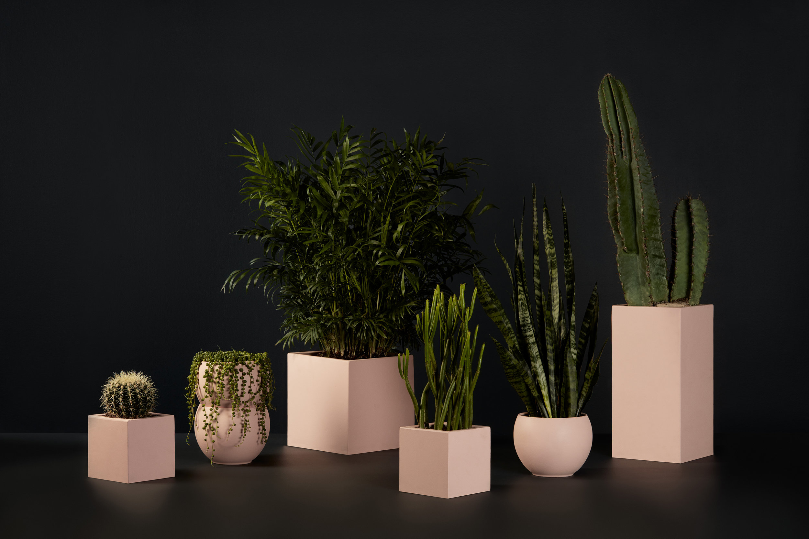
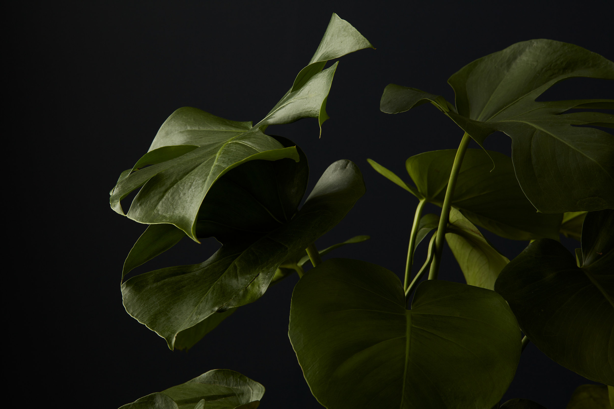
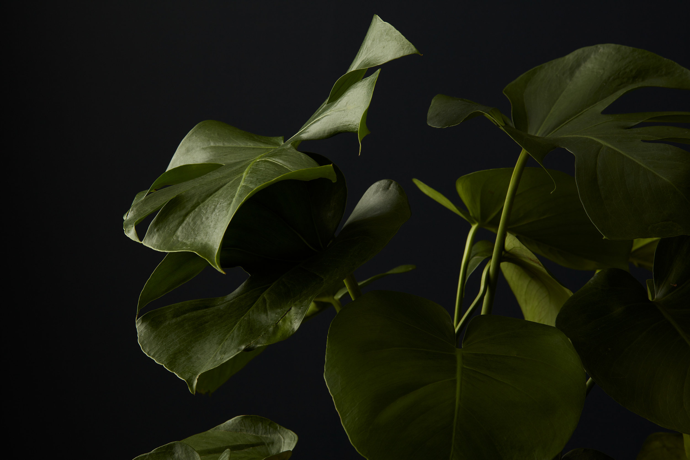
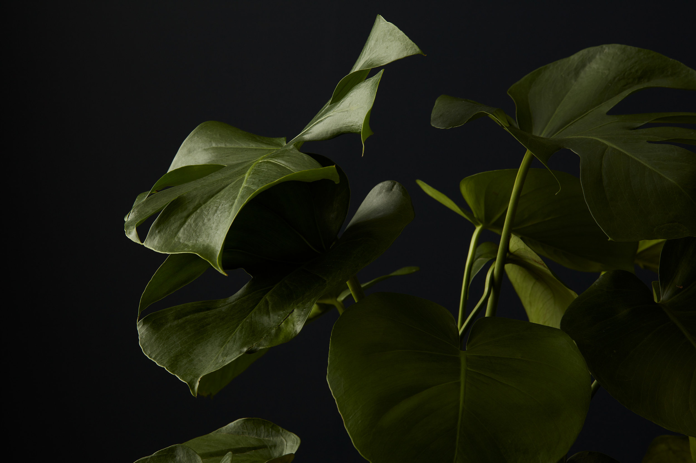

 


Na Crosby, cultivamos mais do que plantas — cultivamos
conexões.
Desde os primeiros brotos da nossa ideia
até o florescer do nosso e-commerce, acreditamos que a
natureza transforma espaços e bem-estar.
Unidos pela paixão pelo verde, enfrentamos os desafios
com raízes firmes e crescemos com cada cliente que
escolhe levar um pedaço da natureza para casa. Porque
acreditamos que toda planta carrega uma história, e a
nossa está apenas começando.